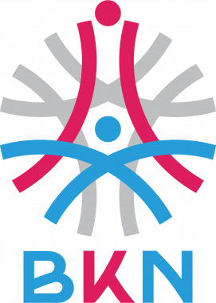

SKP Analyzer
AI SMART Evaluator Dashboard
Hasil Analisis AI
78%
Membutuhkan Perbaikan
Analisis menemukan 4 dari 8 Indikator lemah pada aspek Measurable (M).
Indikator 1: Peningkatan Kualitas Layanan Publik
Kata kerja kurang spesifik. Target kuantitatif tidak terdefinisi jelas.
Indikator 2: Penyelehan Target Kinerja
Target tidak realistis dan belum relevan dengan RHK atasan.
Indikator 3: Efisiensi Anggaran Operasional
Indikator sudah baik, tetapi kurang *evidence* hasil kuantitatif.